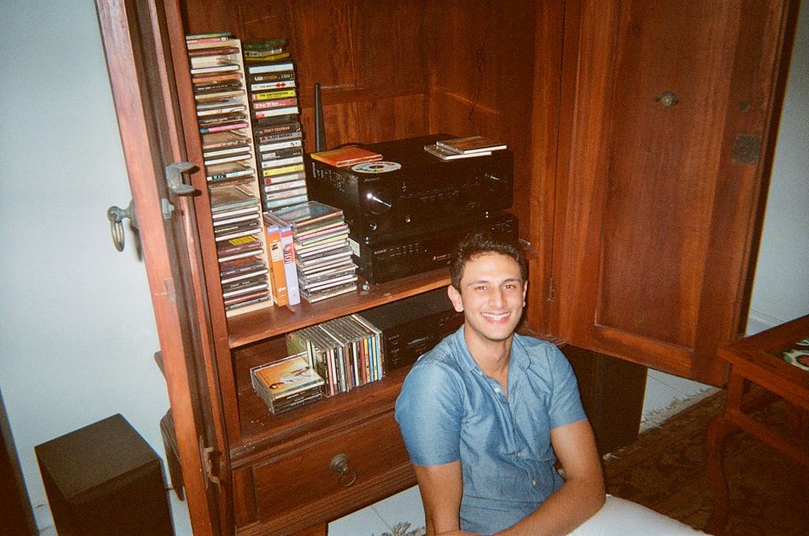

currently: playing Polyphia on guitar, making podcasts on inspiring students, and stumbling through computational linguistics research (TBD)
hi! I'm
Arya
आर्या
!
I'm 19 years old, from India, born and raised in Singapore and am
currently serving in the Singapore Armed Forces.
I've always been curious about the magical things that
technology can do — that's why I've spent my teenage years
exploring the field alongside my two best buddies (Khush
and
Taichi). Along the way we built our own startup, conducted NLP
research, and hackathon-hopped around Asia.
In junior and senior year of high school, I wanted to seek intellectually diverse perspectives and broaden my horizons, so I focused on Philosophy and Pure Mathematics. Thanks to this, I'm now learning about many fields beyond just tech: linguistics, storytelling, mental health and law.
I graduated from high school in summer 2020, and I'm now serving two years of compulsory national service before university. I'm really excited to use this time to grow and experiment.
Here's my
email
if you want to chat or work on something together!
some tech I've built
-
Zipcall.io (May '20) learnt peer-to-peer tech and RTC through implementing group vidchat on Zipcall.io (250k users).
-
Kafka (April '20) this ended up being the first public release of dependency parsing on iOS! A month-long project that taught how to use CoreML and optimise NLP code.
-
Questo ('16 --'19) — generate test questions from a picture of a textbook. $112k cloud funding from Google and IBM. #1 on Product Hunt (11/2/19), Hacker News feature
-
Photonify ('17) — a photo assistant app that helps you take better photos in real-time. Won $40,000 "Most Creative" prize at Startup Weekend 2017. 1 2
-
Bookworm ('18) — software that uses CV to let you interact with real, paper books like digital objects. Touch any word, diagram, or picture to learn more on a companion app.
-
h= ('18) — an AI powered human resource manager without bias. It analyses code contributions to assign tasks in a team based on pure meritocratic skill, thus avoiding bias. 1
hackathon experience (hostin & hackin)
5x hackathon wins & 3x hackathons organised, details in my resume!
music (playing & writing!)
click here to find out more about my music work